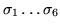
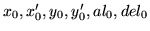

Input formatParameter definitions
GENEration of particles
nopt  scale npart

nopt
1
3
scale
npart
Examples
The example shown is taken from dem07 . It will generate 500 particles inside the ellipsoid defined by a previous beam matrix definition using a gaussian distribution truncated at 6 sigmas for the transverse coordinates and 1 sigma for the longitudinal coordinates.
GENERATION OF PARTICLES 3 6 6 6 6 1 1 1.0 500 0 0 0 0 0 0,